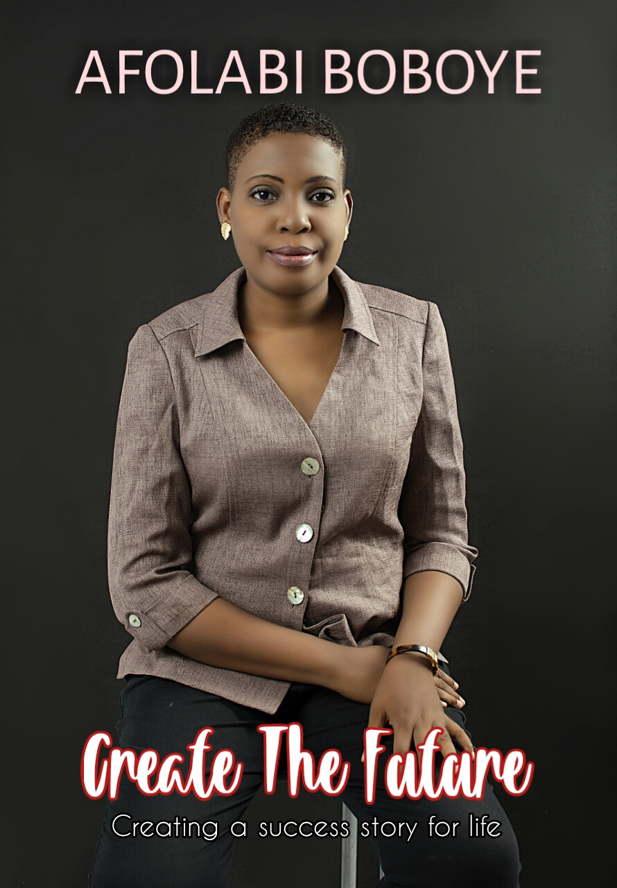

CREATE THE FUTURE

Sarah Jakes Roberts is redefining what it means to be a modern woman of faith. Her messages spread
throughout the world defying cultural, religious, gender, and socio-economic boundaries. Whether
through her bestselling books or viral messages, it only takes a few minutes of connecting with her to
understand why she becomes an instant favorite. Sarah has a unique way of reaching people who are
seeking to make peace with their past, maximize their present, and deepen their relationship with God.
Alongside her husband, Touré Roberts, she co-pastors The Potter's House at One LA and The Potter's
House Denver. With her down to earth personality, contemporary style, and revelatory messages there's
no question why she is an emerging thought leader for this generation, yet her growing influence came
by surprise.
"If you would have told me five years ago that I would be in full time ministry,I would have asked if you
were talking to the right person." Sarah said.
At twenty-three years old she was tempted to allow her journey as a woman battling insecurities, teen
pregnancy stigma, low self-esteem, toxic relationships, and depression to define the rest of her life. It
wasn't until she was in her darkest moment that she realized she only had two options: settle or evolve.
Sarah dared to harness the wisdom of her past wounds and apply them to the hope for her future.
The process of transforming from the insecure and fearful young girl that she was into the powerhouse
wife, mother, businesswoman, and leader that she is took dedication, discipline, resources, and spiritual
growth. Her passion is to utilize her experiences, insight, and influence to help every soul she
encounters to evolve into the best version of themselves.
In 2017, Sarah launched Woman Evolve a ministry that focuses on incubating every woman to her fullness.
Since its conception Woman Evolve has been successful at reaching and guiding thousands of women
to awaken healing, wholeness, and love for themselves and others.
To learn more about ways that you can get involved with the Woman Evolve movement click here.
Sarah has received many honors, including recently being celebrated as a National Overcomer by Pat and Emmitt Smith
Charities in partnership with
Good Morning America co-host,Robin Roberts. Sarah has also been featured in numerous media
outlets including The Today Show, Dr. Phil, Essence,
The Associated Press, and The 700 Club. A naturally gifted scholar,
Sarah graduated high school in the top ten percent of her class and in the nation at
the age of sixteen and attended Texas Christian University, where she studied journalism.
Of all her accomplishments Sarah is most proud of the life she and her husband, Touré, have built together.
Together they have
six beautiful children and split their time between Los Angeles, CA and Denver, CO.